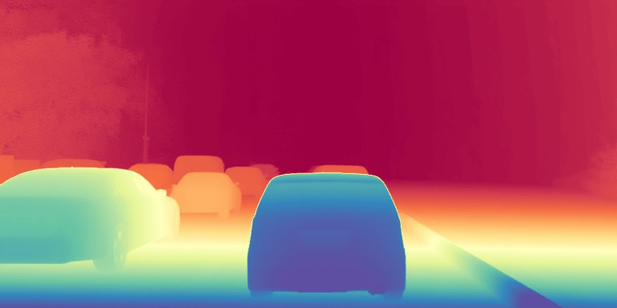
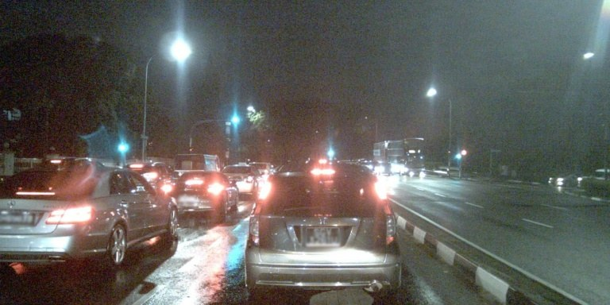
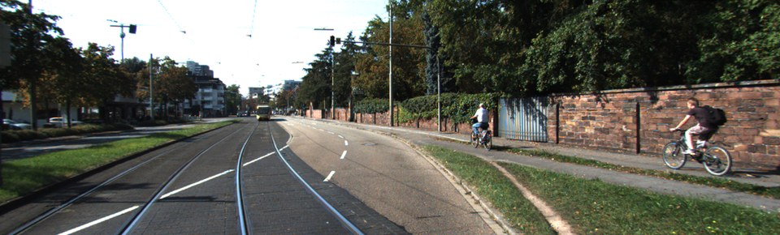
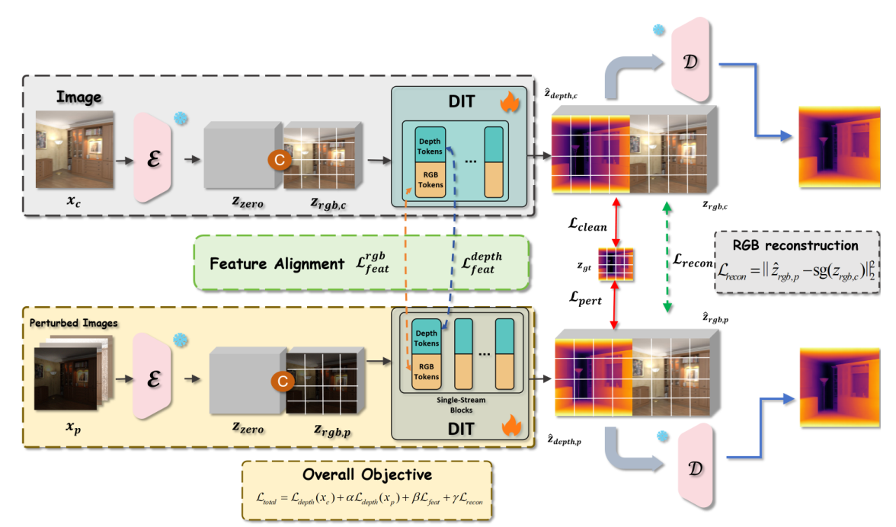
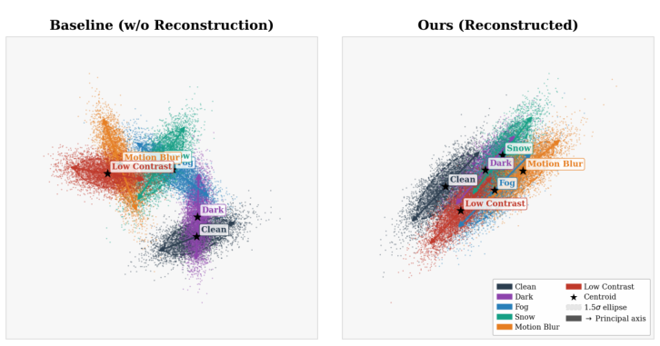

Start with editing priors
Step1X-Edit supplies an Image-to-Image foundation that preserves scene structure. Depth is regressed in one deterministic step.
STRUCTURE-PRESERVING I2ISeeing beyond
appearances.
The world changes its appearance.
Its geometry shouldn't have to.

GEOMETRY
OBSERVATIONRain, fog and darkness change how a scene looks, but not how it is built. OpenDepth turns this observation into a principle for robust depth estimation.
We repurpose the structure-preserving priors of an image editing model and introduce intra-domain awareness: mapping different appearances of the same geometry into a unified latent space. Shallow feature alignment and joint RGB reconstruction help separate environmental style from underlying structure.
Recently, the integration of generative priors has revolutionized Monocular Depth Estimation (MDE), achieving state-of-the-art performance with remarkably high data efficiency. However, although methods based on Text-to-Image (T2I) models excel in general scenes, their efficacy degrades sharply when confronted with open-world environmental perturbations, such as illumination variations and adverse weather. Since T2I priors are optimized for semantic synthesis rather than preserving pixel-level structure, they struggle to decouple geometry from appearance under severe visual shifts, easily triggering structural hallucinations. Therefore, our core insight is to model open-world depth estimation as consistent geometric inference across multi-style images, fully leveraging the powerful structure-preserving editing priors of Image-to-Image (I2I) models. Based on this, we propose OpenDepth, a robust open-world MDE framework that introduces “Intra-Domain Awareness”—the capability to map diverse stylistic inputs sharing identical geometry into a unified latent space. To achieve this, we first align shallow features within the Diffusion Transformer (DiT) to anchor degraded observations to unified geometric representations. Additionally, we introduce a joint RGB latent reconstruction task, requiring the model to recover clean RGB information from degraded inputs. This multi-stage strategy effectively decouples environmental style interference, compelling the model to focus strictly on underlying geometric recovery. Extensive evaluations show that OpenDepth sets new SOTA records for robust zero-shot depth estimation across standard and extreme weather benchmarks, demonstrating exceptional structural integrity and adaptability.
Explore actual OpenDepth predictions across visual shifts.
One scene. Six appearances. A consistent sense of depth.

KITTI · synthetic visual perturbations · epoch016 disparity checkpoint · 10-step predictions
Illustrative 3D lifting using a nominal pinhole camera and per-image relative depth. This view is not a metric reconstruction.
Nighttime traffic. Wet roads. Low visibility.
Zero-shot predictions in real adverse conditions.
RGB input above · OpenDepth prediction below. Colors visualize relative depth, normalized independently for each image. Visualizations use the epoch016 disparity checkpoint with 10 inference steps.
An image editing prior provides the foundation.
Two complementary constraints make it robust.
Step1X-Edit supplies an Image-to-Image foundation that preserves scene structure. Depth is regressed in one deterministic step.
STRUCTURE-PRESERVING I2IClean and degraded observations share geometry. Early DiT feature alignment anchors both to a common representation.
LATENT FEATURE ALIGNMENTA joint RGB latent reconstruction task guides perturbed features toward the clean domain while predicting depth.
UNIFIED RGB RECONSTRUCTION
Without reconstruction, deep features scatter across environmental styles. With unified RGB reconstruction, perturbation clusters align within a shared domain.
t-SNE analysis · Figure 4 in the paper

Zero-shot relative depth evaluation.
Lower absolute relative error is better.
Real-world nighttime and adverse weather benchmarks · Paper Table 2
AbsRel (%) as reported in the paper. Comparisons follow the paper's evaluation protocol; they are not a live leaderboard.
79K training samples.
Image editing priors make data-efficient, robust geometric perception possible.
If OpenDepth supports your research,
please consider citing our paper.
@inproceedings{zhang2026opendepth,
title = {OpenDepth: Repurposing Image Editing Priors
for Robust Open-World Monocular
Depth Estimation},
author = {Zhang, Mengke and Yang, Tianyi and
Li, Xinzhuo and Ming, Anlong},
booktitle = {Proceedings of the 34th ACM International
Conference on Multimedia},
year = {2026},
doi = {10.1145/3767308.3836413}
}